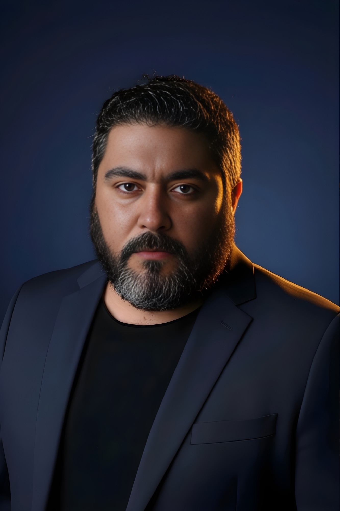

FOTÓGRAFO · ESCRITOR · COLUNISTA
Alfa Bile é fotógrafo, artista visual, poeta e compositor, radicado em Itajaí, Santa Catarina, com uma trajetória autodidata marcada por intensidade criativa. Sua produção atravessa a fotografia, a pintura — em giz pastel oleoso, acrílico e nanquim — e a palavra, sempre em busca do mesmo campo emocional: o silêncio que mora nas paisagens e no cotidiano.
É colunista do Jornal Diarinho, onde assina Clique Diário, e da Revista Sopa de Siri, com "Verso na Sopa". Seu trabalho já circulou pela National Geographic, pelo DJI Global Drone Contest e pelo Brasília Photo Show, com obras em coleções e espaços institucionais no Brasil e no exterior, entre eles Hilton, BRE Hotels NY e a Prefeitura de Itajaí. Atualmente aprofunda sua pesquisa em Artes Visuais.
Alfa não apenas retrata — transforma. É luz que se torna linguagem.
Itajaí, Santa Catarina · Brasil
